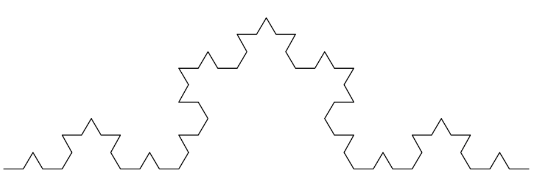
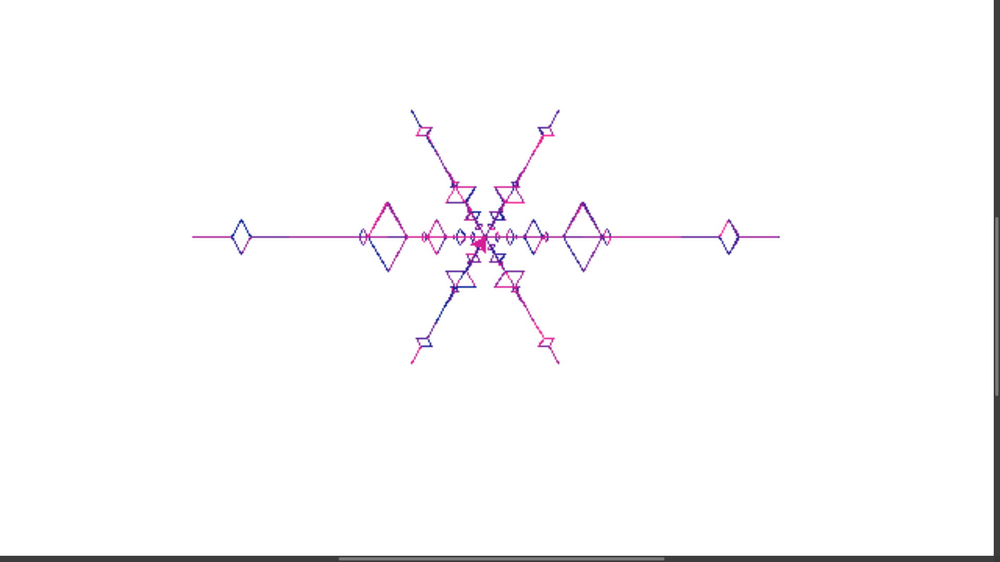
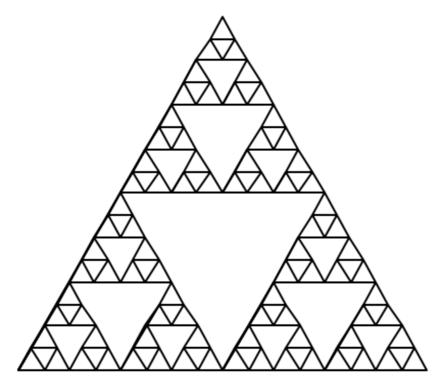
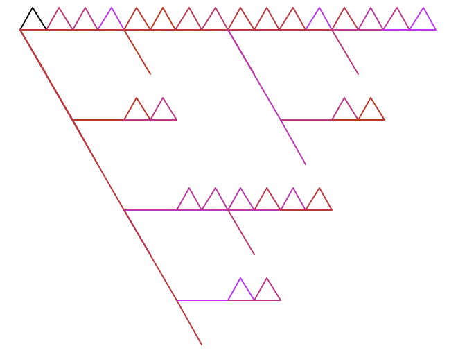
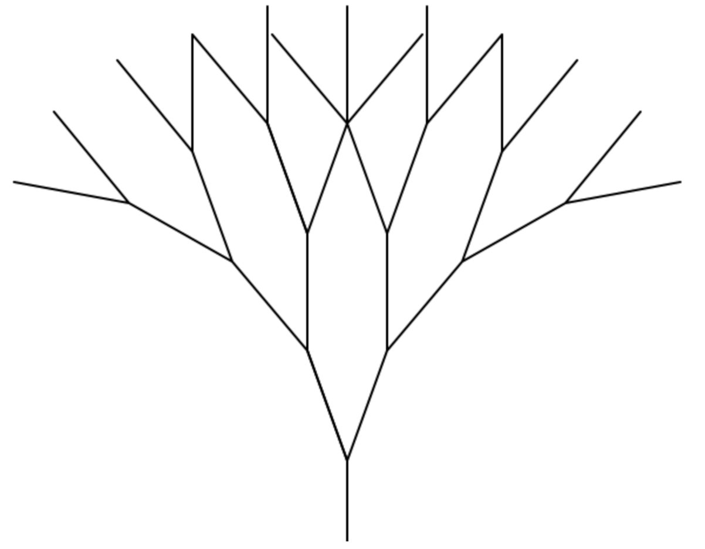
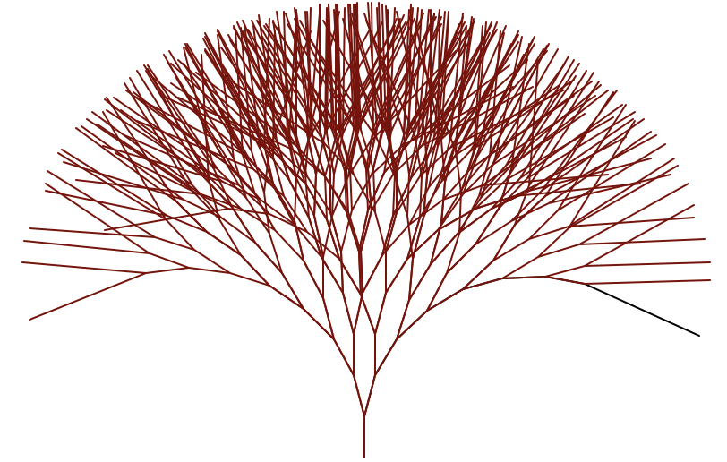

Basic curve koch_curve(t, 4, 20)
This koch curve's modifications are: At the end the turtle is turned to the right by 60 degrees causing the pattern to go over itself. Additionally the colors are randomized in a specific range by changing the amount of red in the color. Also the lengths of the koch curve are modified to give the specific shape of the pattern.

def draw_koch(t, depth, length):
t.pd()
t.color(random.randrange(255), 30, 150)
if depth == 1:
t.fd(length)
else:
draw_koch(t, depth - 1, length)
t.lt(60)
draw_koch(t, depth - 1, length*.5)
t.rt(120)
draw_koch(t, depth - 1, length*.5)
t.lt(60)
draw_koch(t, depth - 1, length)
t.rt(60)
Basic triangle sierpinski(t, 5, 200)
The sierpinski's modifications are: All of the angles in the recursion are swapped, making left right and right left. The colors are also once again randomized in a specific range changing the amount of blue in the color. Lastly, the turtle puts the pen up before completing the triangles, leaving empty spaces in the sierpinski triangle.

def draw_sierpinski(t, depth, length):
if depth == 1:
triangle(t, length)
t.color(200, 40, random.randrange(255))
else:
draw_sierpinski(t, depth-1, length/2)
t.fd(length/2)
draw_sierpinski(t, depth-1, length/2)
t.pu()
t.bk(length/2)
t.rt(60)
t.fd(length/2)
t.lt(60)
draw_sierpinski(t, depth-1, length/2)
t.lt(120)
t.fd(length/2)
t.rt(120)
t.pd()
Basic tree(t, 4, 50, 20)
The tree's modifications are: The lengths of going forward and backwards in the intial and final steps are changed making them less. The tree is also brown. In each recursion the there is a randomized amount added to the angle.

def tree(t, depth, length, angle):
if depth == 1:
t.fd(length)
t.bk(length)
t.color(128,0,0)
else:
t.fd(length/3)
t.rt(angle)
tree(t, depth-1, length, angle + random.randrange(-2,2))
t.lt(2*angle)
tree(t, depth-1, length, angle + random.randrange(-2,2))
t.rt(angle)
t.bk(length/3)